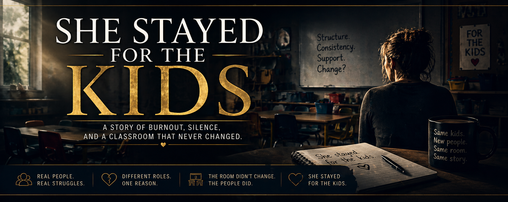

Not every classroom is what it appears to be.
What appears steady at first begins to reveal something deeper over time. A classroom shaped by inconsistency does not announce itself immediately. It unfolds through moments that repeat, patterns that settle, and experiences that quietly reshape those who step into it. This is where the story begins, not with what is seen at a glance, but with what becomes clear the longer you remain.
Told across four acts, this story follows a classroom that remains the same even as the people within it change. Each section reveals another layer, moving from first impressions to deeper understanding, from effort to realization, and from presence to clarity. What unfolds is not a single moment, but a pattern that continues, shaping every person who becomes part of it.
The story does not end with resolution. It settles into reflection. What remains is not only what was experienced, but what was understood through it. The classroom continues, though those who moved through it carry something different with them. This is where everything comes together, not to explain what happened, but to reveal what it meant.